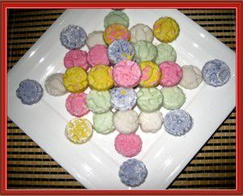

-130 gr bột năng
-80 gr đường
-100 ml nước cốt dừa
-Vài cọng lá dứa
Bước 1: Cho bột năng vào khay cùng với lá dứa cắt khúc trộn đều, rồi cho vào lò nướn 50 phút ở nhiệt độ là 100 độ C.
Bước 2: Nước cốt dừa + đường cho lên bếp nấu cho tan đường là tắt bếp. Để nguội , thật nguội.
Ghi chú: các bạn nhớ nấu lửa nhỏ nhé. Và nếu bạn thích màu thì cũng pha ở giai đoạn này.
Bước 3: Qua thời gian sáy bột, lấy lá dứa bỏ đi,và lấy ra 30 gr bột để riêng, chút nữa rắc khuông nhé.
Cho 100 gr bột vào 1 cái tô to, sau đó cho từ nước dừa vào nhồi. Nếu bạn bốp chặt bột trên dầu ngón tay, thả ra bột kết dính tức là ok. Vì vậy mà bạn nên cho nước cốt dừa vào từ từ nhé.
Bước 4: Rắc 1 ít bột vô khuôn, sau đó cho bột đã nhổi và ấn thật chặt, dùng dao gọt bỏ phần bột dư, rồi gõ khuôn lên bàn , tức thì bánh sẽ rớt ra.